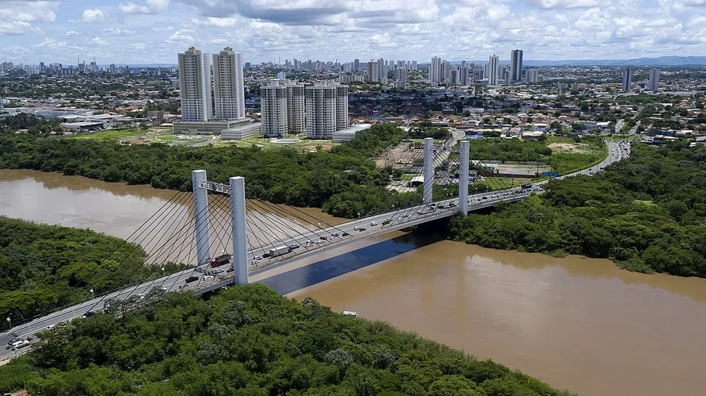

Mato Grosso é um estado localizado na região Centro-Oeste do Brasil, conhecido por sua vasta extensão territorial e diversidade natural. Sua capital é Cuiabá, uma cidade com forte influência indígena e histórica. O estado possui uma grande variedade de ecossistemas, incluindo o Pantanal, uma das maiores áreas de wetlands do mundo, famosa por sua biodiversidade e pela observação de animais selvagens. Além do Pantanal, há também o cerrado e áreas de floresta amazônica, tornando Mato Grosso um lugar de grande riqueza ambiental. A economia do estado é baseada na agroindústria, com destaque para a produção de soja, milho, algodão e carne bovina, além de mineração e energia. Mato Grosso também possui uma cultura rica, influenciada por tradições indígenas, sertanejas e pantaneiras, refletida em festas, culinária e manifestações culturais. É uma região que combina natureza exuberante, desenvolvimento econômico e uma forte ligação com a vida rural.
 Voltar